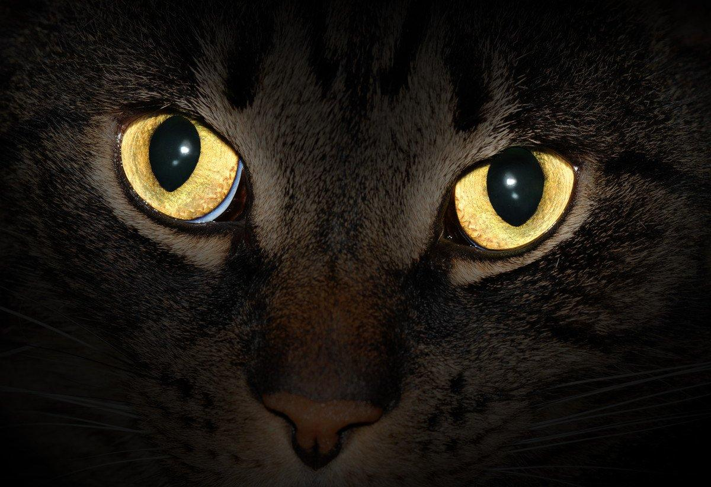
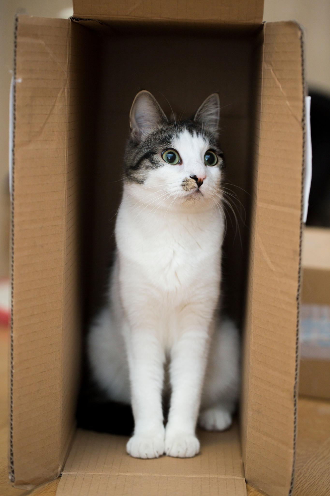
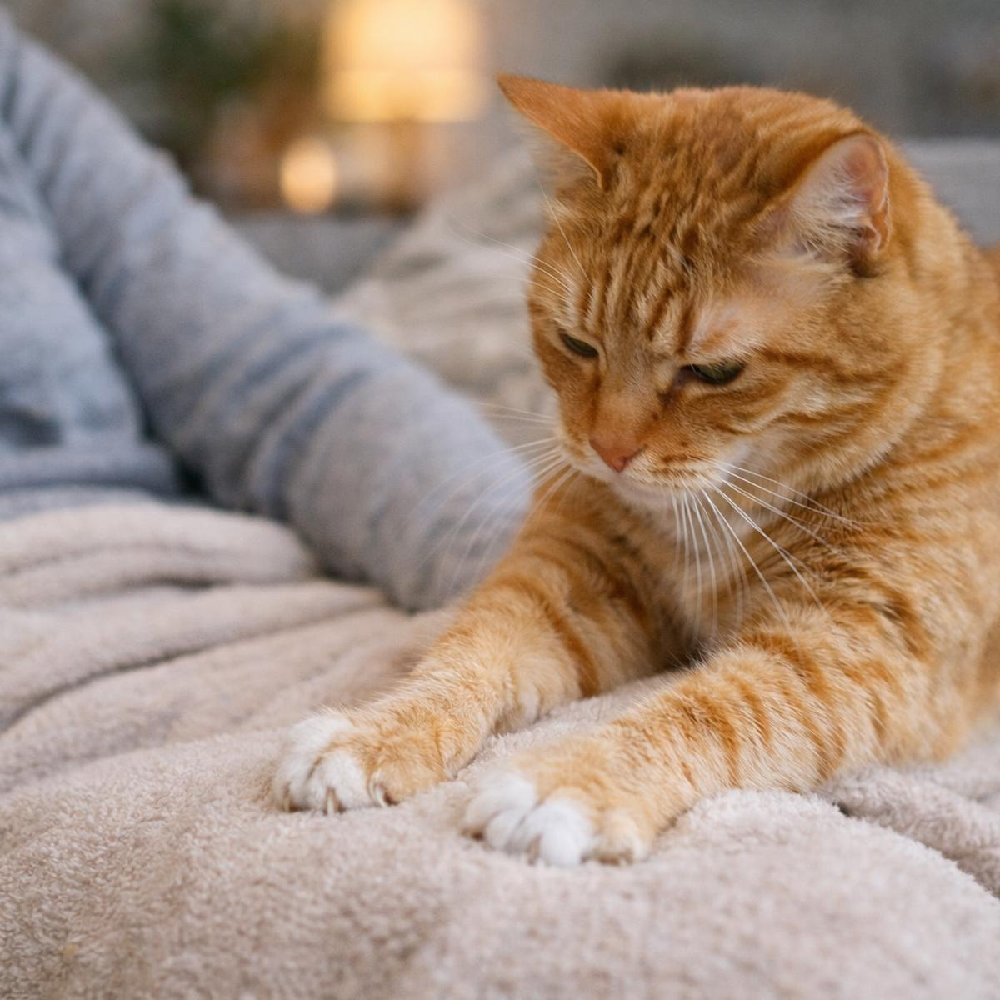

Kediler günün önemli bir bölümünü uyuyarak geçirir ve uyku süreleri yaşlarına göre değişebilir. Bıyıkları, dar alanları algılamalarına ve çevreleri hakkında bilgi edinmelerine yardımcı olur. Patilerindeki yastıkçıklar yürürken çıkardıkları sesi azaltabilir. Ayrıca kedilerin koku alma duyuları oldukça gelişmiştir ve çevrelerini tanımalarında önemli rol oynar.